Overview
psyOperator is a multi-layer FM synthesizer built for the three major psychedelic genres. It combines four BLEP-antialiased oscillators (Sine, Saw, Triangle, Square) with an advanced FM source morph engine, a DARK lowpass filter, a dedicated sub-oscillator, and four cross-modulating macros.
Internally, psyOperator runs a 22-stage DSP pipeline at audio rate. Every stage is visible in one of three on-panel displays: the main PsyDisplay (top center), the FM Engine Display (center), and the Sub Wave Display (bottom right). Together, they provide real-time feedback on every aspect of the sound.
14 Morph Shapes
Continuously morph between Sine, Squelch, Ring-Sine, PM-Fold, and more — each designed for a specific genre.
4 Modular Macros
PSY, DARK, MOTION, and FERAL cross-modulate the entire signal chain from a single knob.
Sub Oscillator
6 waveforms, 8 frequency modes, and layered/modulator/carrier routing for sub-bass.
Turbulence
Lorenz chaos, envelope follower, or rhythmic gating for organic motion.
FERAL Feedback
Self-modulating feedback loop for aggressive, unstable textures.
Bit Crush + SRR
Digital degradation for lo-fi, harsh, or glitchy character.
Quick Start
Get sound out of psyOperator in under 60 seconds:
- Patch
FINAL_OUTPUT(bottom right) to your audio interface. - Optionally connect a gate/trigger to
GATE_INPUT(top left) to enable the VCA. - Adjust the PSY macro to taste — it opens the FM source morph and adds bite.
- Explore the 14 shapes by turning the FM SRC MORPH knob (right column).
- Try Genre Mode from the context menu (right-click) for instant presets.
GATE_INPUT for organic amplitude modulation.
Signal Architecture
psyOperator processes audio through 22 stages. The high-level path is:
Detailed 22-Stage Pipeline
FM Engine
The FM Engine is the core sound-generation module. It takes four base oscillators (Sine, Saw, Triangle, Square), modulates their frequencies (or phases), and routes them through one of three topologies. The engine exposes three independent controls: FM Mode (how the modulation is applied), FM Routing (who modulates whom), and FM Sync (phase alignment between oscillators).
FM Modes
The FM MODE switch (top center) determines how the FM index affects
the frequency or phase of each oscillator. All three modes use the same FM Index
knob and CV, but interpret them differently:
| Mode | Formula | Character | Use case |
|---|---|---|---|
| EXP | f = base · 2^(index · 2 · cv) |
Exponential — musical, tonal | Psy basslines, melodic leads |
| LIN | f = base · (1 + index · 2 · cv) |
Linear — symmetric, harsh | Metallic darkpsy, aggressive hitech |
| PHASE | φ = φ + index · 0.75 · cv |
Phase modulation — true FM sound, no DC drift | Warm leads, chimes, formants |
- EXP: stay in tune when index changes; the ratio doubles every 1.0 index unit. Perfect for pitched leads.
- LIN: index causes absolute Hz shift. Non-tonal, chaotic. Great for darkpsy.
- PHASE: mathematically equivalent to classic FM but without DC offset. Best for high-index FM where LIN/EXP would cause aliasing.
FM Routing
The FM ROUTING switch (next to FM Mode) determines who modulates whom
between the four oscillators. Each routing mode has a distinct sound character.
| Route | Behavior | Result |
|---|---|---|
| GLB (Global) | All four oscillators share the same FM CV, plus their own self-feedback. | Unison FM. Each oscillator keeps its own pitch but receives the same modulation. Safest, most predictable. |
| SLF (Self) | Each oscillator modulates itself. No cross-talk. | Classic self-FM. Slightly out of tune because of feedback; great for metallic leads. |
| CHN (Chain) | Oscillators modulate each other according to one of 8 chain patterns (see Chain Patterns). | True cross-FM. Highly complex, evolving, aggressive. The most "alive" option. |
FM Sync
The FM SYNC switch aligns the phase of the saw, triangle, and square
oscillators to the sine oscillator. This creates hard-sync and soft-sync effects
that change the waveform drastically.
| Sync Mode | Behavior | Sound |
|---|---|---|
| OFF | No phase alignment. Each oscillator runs freely. | Clean, stable. |
| SFT (Soft) | When sine wraps, slave phase is pulled toward 0.5 with strength coefficient. | Soft sync — bell-like, no hard clicks. |
| HRD (Hard) | When sine wraps, slave phase snaps to 0.5 immediately. | Hard sync — aggressive, sharp leads. |
| REV (Reverse) | When sine wraps, slave phase inverts (wrap(1.0 - phase)). | Reverse sync — unpredictable, glitchy. |
FM SYNC STRENGTH (0..100%) controls how aggressively the sync pulls
the slave phase. At 0%, sync is disabled even if the mode is set. The knob can also
be dragged directly from the FM Engine Display (see below).
Chain Patterns
When FM Routing is set to CHN, the four oscillators modulate each other
according to one of eight chain patterns. Each pattern is a permutation of
[sine, saw, triangle, square], and the display shows the active pattern
as a small graph.
Chain Depth (per-node)
Each chain node has an independent depth from 0% to 100%, set by dragging vertically on the node inside the FM Engine Display while the CHAIN segment is focused. A node at 0% breaks the chain — the incoming modulation to that oscillator is silenced. A node at 100% passes the full modulation. This lets you sculpt exactly which oscillators participate in the chain.
FM Index
The FM INDEX knob (large, left of center) and its CV input control the
master FM depth. Internally, the index is computed as:
fmIndex = knob + CV·amount + 0.30·psy + 0.20·turbulence·motion + 0.10·feral + env·6 + feedback·feral·turb
Then clamped to
[-30, +30], soft-saturated, and clamped again to [-6, +6].
The final index (post-clamp) modulates each oscillator's frequency or phase according
to the FM Mode. Negative index inverts the modulation — useful for phase inversion
effects. The FM ENV knob adds an envelope-follower term, making the
index track the signal amplitude (dynamics).
Internal Modulator
When FM INPUT is not connected and
LEGACY STATIC is set to Off (default), psyOperator uses an
internal modulator instead of an external CV. This internal modulator
is a full oscillator with its own frequency, waveform, and warmth.
| Parameter | What it does |
|---|---|
| MOD RATIO | Frequency ratio of the modulator (0.25× to 8×) |
| MOD WAVE | Base waveform: Sine (follows Morph), Triangle, Saw, Square |
| MOD PITCH | Pitch offset from the sine oscillator (-2 to -6 oct) |
| MOD CV | Pitch modulation via the Pitch Bus |
| MOD WARMTH | tanh blend for non-sine modulators (adds harmonics) |
| INT SCALE | How much of the internal modulator feeds the FM CV |
| INT AMT | Internal self-FM injection amount (for feedback loops) |
LEGACY STATIC is On, the internal modulator is ignored and a
constant +5V is used as FM CV (matches old behavior). Turn it off to use the
internal modulator.
FM Engine Display
The circular FM Engine Display (center of the panel) is the interaction hub for the FM engine. It is divided into four clickable ring segments plus a central area whose contents depend on the focused segment.
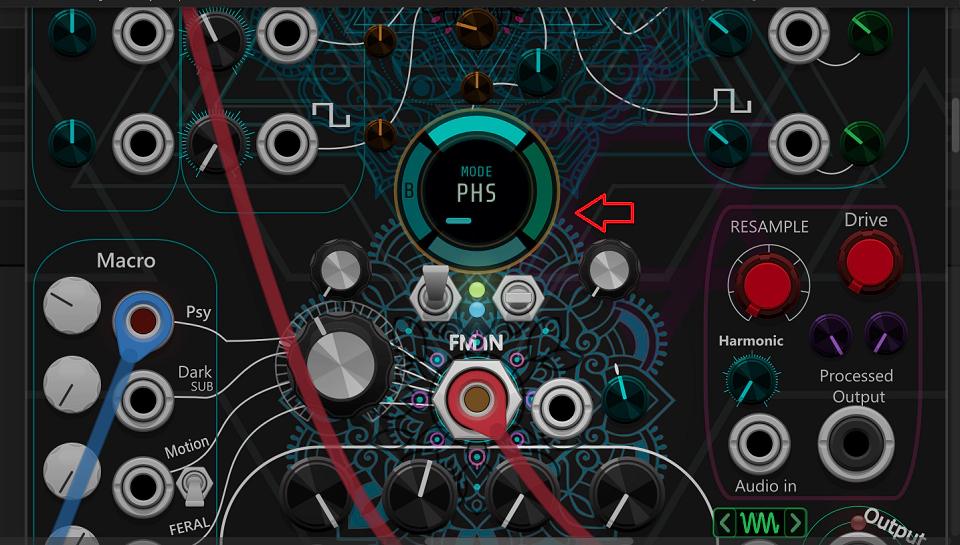
Four Segments
Hovering over the outer ring selects a segment. Each segment has its own color, center content, and interaction.
| Segment | Color | Center content | Interaction |
|---|---|---|---|
| MODE | Cyan | Current FM mode label + FM Index bar | Left click cycles: EXP → LIN → PHS → EXP |
| ROUTE | Orange | Current routing label (GLB / SLF / CHN) | Left click cycles: GLB → SLF → CHN → GLB |
| SYNC | Pink | Sync mode + sync-strength ring | Left click cycles sync mode; drag inside the ring to set sync strength; right click resets strength to 100% |
| CHAIN | Green | Mini-chain graph with 4 nodes and animated arrows | Left click cycles patterns A→H; drag a node vertically to set its depth; right click a node resets it to 100% |
Ring Letter (Top-Left)
A letter (A–H) is drawn on the left side of the ring. It shows the currently active chain pattern. When the CHAIN segment is focused, the letter becomes fully opaque; otherwise it fades to a dim state. This lets you see the active chain at a glance even when focused on another segment.
Mini-Chain Graph
When the CHAIN segment is focused, the center shows a small interactive graph:
- Four colored nodes arranged in a square: cyan (Sine), orange (Saw), green (Triangle), pink (Square)
- Animated arrows show the current routing direction; arrow speed is fixed at 1.8×
- Each node has an arc from -π/2 to +π/2 showing its depth (0% = no arc, 100% = full circle)
- While dragging a node, a percentage is drawn inside it
- Waveform icons are drawn inside each node when not dragging (shows which oscillator it is)
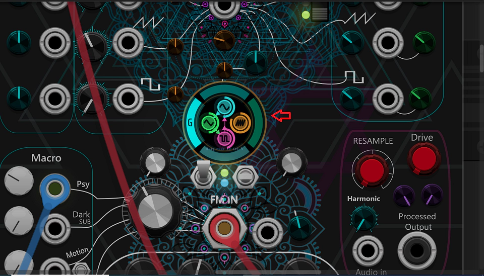
Sync-Strength Ring
When the SYNC segment is focused, the center shows a ring representing sync strength. The arc starts at -π/2 and sweeps clockwise proportional to the current strength (0–100%). Dragging vertically inside the ring adjusts the strength; release to lock.
FM Source Morph
The heart of psyOperator is a 14-shape morph engine controlled by the
FM SRC MORPH knob and its dedicated CV input. Each shape has a
distinct spectral fingerprint, tuned for a specific psychedelic genre.
The 14 Shapes
The morph engine interpolates linearly between adjacent shapes and applies a subtle sinusoidal emphasis in the transition zone, so even morphing between two visually similar shapes produces an audible shift. RMS is normalized across all 14 shapes so the perceived loudness stays constant as you sweep the knob.
Morph CV Input
The FM SRC MORPH CV input modulates the morph position on top of the
knob. Response depends on the CV MODE switch (see CV Modes).
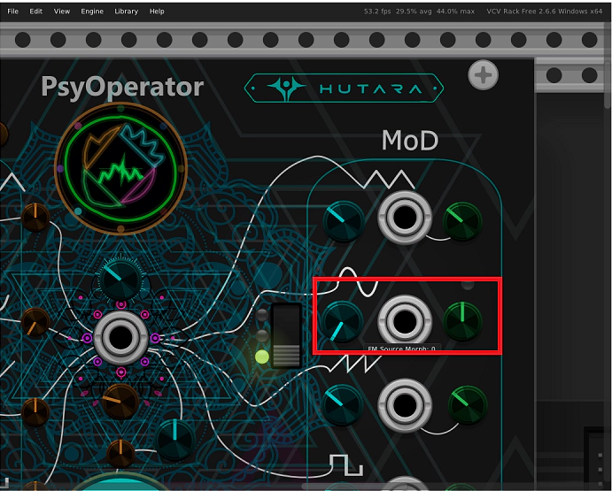
FM SRC MORPH CV with amount at 100%
for evolving, stepped morph textures. The 8 ms slew smooths transitions without
killing the snap.
Main Display (PsyDisplay)
The large circular PsyDisplay at the top center is the main oscilloscope-style display. It shows the current state of all four oscillators, the sum output, and status of key parameters.
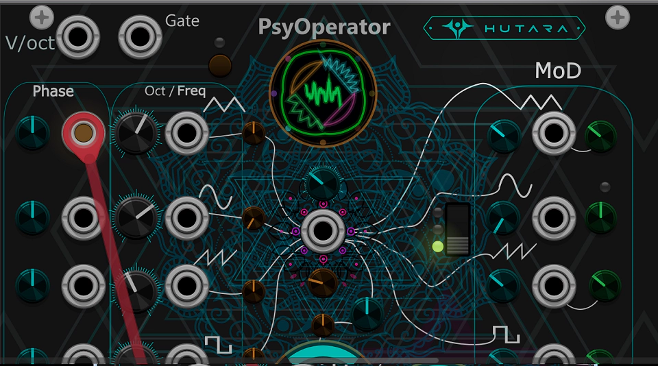
Layers (Inside to Outside)
| Layer | What it shows |
|---|---|
| Center Wave | Mini oscilloscope of the SUM output (fades when text overlay is active) |
| Center Text | Parameter name + value when a knob is touched (3.5s hold, 1s fade) |
| Quad Waves | 4 arcs showing snapSine, snapSquare, snapTri, snapSaw (one per quadrant) |
| Sum Ring | Circular waveform of snapSum — full ring shows the SUM output envelope |
| Status Dots | 8 glowing dots around the edge (see below) |
Status Dots
Eight small glowing dots are drawn around the edge of the display. Each represents a key parameter and brightens according to its current value:
Parameter Overlay
When you touch any knob or switch on the panel, the PsyDisplay briefly shows the parameter name and value in the center. This is a "flash display" that lets you read values without external tools. It fades out after 3.5 seconds of inactivity.
The overlay distinguishes between pitch values (Hz or oct, based on Pitch Mode) and other values (%). For the pitch knobs, it re-renders immediately if you toggle the Pitch Mode switch.
Sub Wave Display
The Sub Wave Display (bottom right) is a small rectangular display that shows the current sub-oscillator waveform in real time, with left/right buttons to change the waveform without opening the context menu.
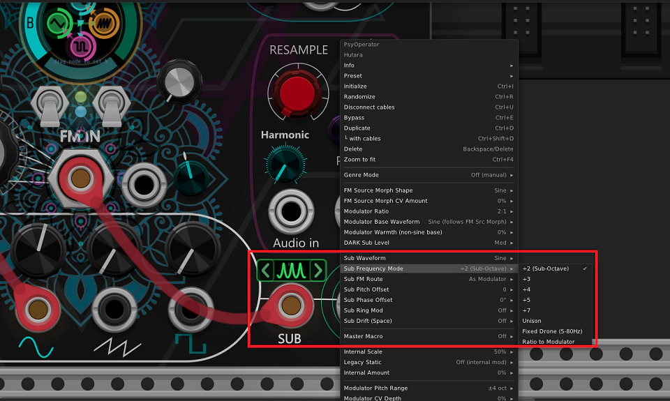
Elements
- Left chevron (‹) — cycles to the previous waveform
- Right chevron (›) — cycles to the next waveform
- Center waveform — live preview of the sub oscillator output
- Wave label — SIN, TRI, SAW, SQR, FLD, SYN
Active / Inactive States
The display turns gray when SUB ROUTE is set to OFF.
In this state, the waveform is not drawn (the sub is disabled). This gives you a
clear visual indicator that the sub oscillator is bypassed.
Click Behavior
Clicking either chevron cycles the waveform through the 6 options (SIN → TRI → SAW → SQR → FLD → SYN → SIN → ...). This is faster than opening the context menu, so live performers can switch waveforms mid-set.
DARK Filter
The DARK macro controls a one-pole lowpass filter that progressively darkens the signal. It is not a resonant filter — it is a clean, transparent lowpass with a smooth exponential cutoff curve.
| DARK knob | Cutoff frequency | Character |
|---|---|---|
| 0% | 18,000 Hz (bypass) | Full brightness |
| 25% | ~9,700 Hz | Slight top-end roll-off |
| 50% | ~5,200 Hz | Muffled presence |
| 75% | ~2,800 Hz | Dark, underwater |
| 100% | 1,800 Hz | Very dark, sub-bass-like |
Internally, the DARK macro also:
- Blends the FM mode from EXP toward LINEAR (adds inharmonic bite)
- Reduces the resonance of the sub oscillator (softens the sub)
- Adds harmonics through asymmetric drive on the sub
- Increases the sub level (auto-blend)
Turbulence
The MOTION macro (labeled "Turbulence") is a chaos/noise generator
that adds organic modulation to pitch, FM, morph, wave shaping, and sync. Its behavior
depends on the TURB MODE switch (3-position).
| Mode | Source | Character |
|---|---|---|
| CHA (Lorenz) | Lorenz attractor (3D chaos) | Unpredictable, evolving. The classic "living" texture. Speed scales with MOTION. |
| ENV (Envelope) | Internal envelope follower of the audio output | Turbulence tracks the signal itself, so louder parts get more modulation. |
| RTH (Rhythmic) | Internal clock (0.5–12 Hz) | Gated turbulence — synced to a rate you can tune with MOTION. Good for rhythmic patches. |
The turbulence output is used in the following places:
FM Index— adds 0.20 × turbulence × motionEffectiveMorph CV— adds 0.25 × turbulence × motionEffectivePhase Mod— adds 0.045–0.070 × feral × turbulence × motion to each oscillatorSub Drift— scales sub oscillator frequency wobbleSync Strength— boosts sync strength by 0.30 × turbulence × motionWave Shaping— adds 0.28–0.30 × turbulence × motion to saw/tri/square
FERAL Feedback
The FERAL macro controls a self-modulating feedback loop that injects previous output back into the FM engine. It is the source of psyOperator's most aggressive, unstable textures.
FERAL Affects
| Stage | Effect |
|---|---|
| FM Index | Adds 0.10 × feral to base FM index |
| Wave Shaping | Adds 0.30–0.55 × feral × psy to shape amount |
| Phase Mod | Adds 0.045–0.070 × feral to each oscillator |
| Sub Ring Mod | Increases ring mod depth |
| Final Stage | Adds tanh(finalNorm + 0.035 × feral × feedback) |
| Feral Feedback Loop | Feedback coefficient grows from 0.02 to 0.42 |
Feedback Loop Internals
The feedback loop is a tanh-saturated, one-pole smoothed version of the final signal, injected back into the FM index. The feedback coefficient increases from 0.02 (at FERAL 0%) to 0.42 (at FERAL 100%). This creates a slow buildup of chaotic modulation that can be very aggressive at high FERAL settings.
Sub Oscillator
psyOperator includes a dedicated sub-oscillator that runs independently of the FM engine. It can be layered on top of the main signal, used as a modulator, or used as a carrier for carrier-sub ring mod.
6 Waveforms
| Wave | Character | Best for |
|---|---|---|
| SIN | Pure sine sub | Clean psy bass |
| TRI | Triangle sub (odd harmonics) | Rounded bass, softer |
| SAW | Saw sub (all harmonics) | Aggressive bass, darkpsy |
| SQR | Square sub | Acidic bass, hitech |
| FLD | tanh-folded sine (folded sub) | Metal-like sub, aggressive |
| SYN | Sync 2:1 sub | Wide, chorus-like sub |
8 Frequency Modes
| Mode | Frequency | Character |
|---|---|---|
| ÷2 (Sub-Octave) | Sine / 2 | Classic sub bass |
| ÷3 | Sine / 3 | Perfect fifth below |
| ÷4 | Sine / 4 | Two octaves below |
| ÷5 | Sine / 5 | Major third below |
| ÷7 | Sine / 7 | Minor seventh below |
| UNI (Unison) | Sine (unison) | Thickens the fundamental |
| FIX (Drone) | 5 to 80 Hz (fixed) | Drone sub (independent of pitch) |
| MOD (Ratio) | Modulator / 2 | Sub follows FM modulator |
4 Routing Modes
| Route | Behavior |
|---|---|
| LAYER | Sub is mixed with the main signal at the final stage |
| MOD | Sub becomes an additional FM modulator (into FM index) |
| CARRIER | Sub is frequency-modulated by the modulator (sub becomes carrier) |
| OFF | Sub is disabled — no audio, no modulation |
Sub Pitch & Phase
SUB PITCH— sets the sub oscillator's pitch offset from the sine oscillator (-2 to +2 octaves). Applies to all modes except FIXED (where it scales the drone frequency instead).SUB PHASE— phase offset from 0 to 360°. Useful for aligning the sub with the main oscillator or creating phase-cancellation effects.SUB RING— ring modulation depth between the sub and the sine output. At 100%, the sub becomes a pure ring-mod bell.SUB DRIFT— adds turbulence-driven frequency drift to the sub. Creates a "space atmosphere" that evolves over time.
Full Parameter Reference
Pitch
| Parameter | Range | Description |
|---|---|---|
| PITCH SINE | -4..+4 oct | Sine oscillator pitch |
| PITCH SAW | -4..+4 oct | Saw oscillator pitch |
| PITCH TRI | -4..+4 oct | Triangle oscillator pitch |
| PITCH SQR | -4..+4 oct | Square oscillator pitch |
| PITCH MODE | FREQ / OCT | Free (Hz) or quantized (octave) response |
| PITCH INPUT ALL | CV input | Pitch CV for all four oscillators |
| PITCH INPUT ×4 | CV input | Individual pitch CV per oscillator |
| PITCH BUS MODE | Off/Bipolar/Quantize/Glide/Both | How the shared Pitch Bus CV is processed |
| PITCH BUS DEPTH ×4 | -100..+100 % | Bus depth per oscillator |
FM Section
| Parameter | Range | Description |
|---|---|---|
| FM INDEX | -1.2..+3.23 | Master FM index |
| FM AMOUNT | -0.5..+0.6 | Attenuverter for FM Index CV |
| FM MODE | EXP / LIN / PHS | Exponential, Linear, or Phase modulation |
| FM ROUTING | GLB / SLF / CHN | Global, Self, or Chain routing |
| FM SYNC | Off / Soft / Hard / Rev | Sync mode |
| FM SYNC AMT | 0..100 % | Sync strength |
| FM CHAIN PATTERN | A..H | 8 chain topologies |
| FM ENV | 0..100 % | Envelope follower adds to FM index |
| INT SCALE | 0..100 % | Internal modulator depth |
| INT AMT | 0..100 % | Internal self-FM injection amount |
| MOD RATIO | 0.25..8.0 | Internal modulator ratio |
| MOD WAVE | SIN / TRI / SAW / SQR | Internal modulator base waveform |
| MOD PITCH | ±2/4/6 oct | Modulator pitch offset |
| MOD CV | -100..+100 % | Modulator pitch via pitch-bus CV |
| MOD WARMTH | 0..100 % | tanh blend for non-sine modulators |
| LEGACY ST | Off / On | Legacy +5V static or internal modulator |
Wave Shaping & Character
| Parameter | Range | Description |
|---|---|---|
| FM SRC MORPH | 0..100 % | Selects shape among 14 |
| MORPH CV AMT | -100..+100 % | Bipolar depth of the Morph CV input |
| SAW SHAPE | -0.5..1.0 | Saw wave shaping amount |
| TRI SHAPE | -0.5..1.0 | Triangle wave shaping amount |
| SQR SHAPE | -0.5..1.0 | Square wave shaping amount |
| SHAPE CV AMT ×3 | -0.5..1.0 | CV depth per oscillator |
| SHAPE CV | -0.5..1.0 | Master shape CV amount |
| PHASE MOD ×4 | -2..+2 | Phase mod depth per oscillator |
| PHASE DIST | 0..100 % | Phase distortion amount |
| HARMONIC | 0..100 % | Harmonic sum (Chebyshev stack) |
| FOLD MIX | 0..80 % | Hard fold blend |
| BIT DEPTH | 1..16 bit | Bit crush resolution |
| SRR | 1..64× | Sample rate reduction |
| OUT DRIVE | 0..100 % | Output saturation amount |
4 Macros
| Macro | Range | What it does |
|---|---|---|
| PSY | 0..100 % | Adds Squelch to morph, boosts FM index, opens wave shaping, drives FERAL |
| DARK | 0..100 % | Closes the DARK filter, blends in sub, boosts FERAL |
| MOTION | 0..100 % | Turbulence amount (Chaos / Envelope / Rhythm) |
| FERAL | 0..100 % | Feedback loop amount, FM self-injection, aggressive shaping |
| MASTER | 0..100 % | Crossfades all four macros toward maximum |
| TURB MODE | CHA / ENV / RTH | Chaos, Envelope-follower, or Rhythmic gating |
Sub Oscillator
| Parameter | Range | Description |
|---|---|---|
| SUB WAVE | SIN/TRI/SAW/SQR/FOLD/SYNC | Sub waveform |
| SUB FREQ | ÷2,÷3,÷4,÷5,÷7,UNI,FIX,MOD | Frequency division or drone |
| SUB PITCH | -2..+2 oct | Sub pitch offset |
| SUB PHASE | 0..360° | Sub phase offset |
| SUB ROUTE | LAYER/MOD/CARRIER/OFF | How the sub joins the FM signal |
| SUB RING | 0..100 % | Sub × Sine ring mod |
| SUB DRIFT | 0..100 % | Spacey turbulence drift |
| SUB LEVEL | 0..100 % | Sub output level |
LED Reference
psyOperator has 11 LEDs across the panel. Each conveys a specific piece of information:
| LED | Color | Meaning |
|---|---|---|
| FINAL_OUTPUT_LIGHT | Red | Output peak — brightens with the final voltage |
| LED_LIGHT (top center) | Green | FM mode — 35% (EXP), 65% (LIN), 100% (PHASE) |
| LED_RED_LIGHT (top center) | Blue | FM routing — 35% (GLB), 65% (SLF), 100% (CHN) |
| HEXAGRAM_LIGHT | Cyan | Pitch bus activity + turbulence |
| FM_AMOUNT_LIGHT | Orange | FM CV activity × FM amount |
| PITCH_STEP_MODE_LIGHT | Yellow | On = pitch mode is OCT (quantized) |
| CV_MODE_LIGHT_0 | Green | On = CV mode is BIPOLAR |
| CV_MODE_LIGHT_1 | Yellow | On = CV mode is UNIPOLAR |
| CV_MODE_LIGHT_2 | Red | On = CV mode is REVERSE |
| FM_SRC_MORPH_CV_LIGHT | Green | Morph CV is actively moving the morph position |
Genre Mode
Right-click anywhere on the module to open the context menu, then choose Genre Mode. Each preset configures the morph shape, FM mode, and macro mix for instant results.
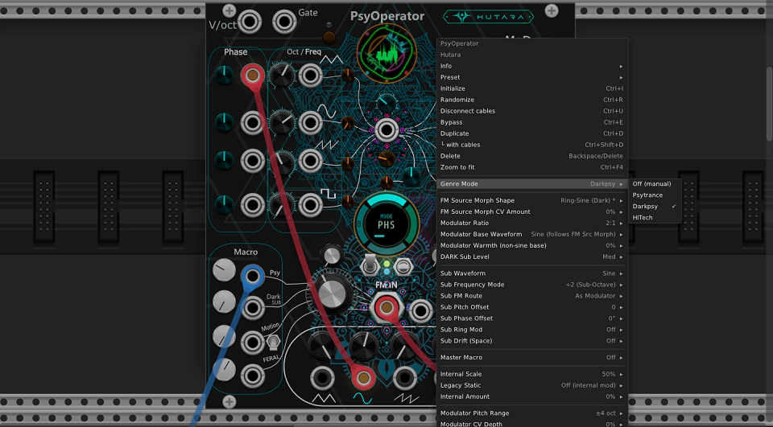
| Mode | Morph Shape | FM Mode | PSY | FERAL | FM Index |
|---|---|---|---|---|---|
| Psytrance | Squelch | EXP | 50% | 20% | 0.40 |
| Darkpsy | Ring-Sine | PHASE | 30% | 60% | 0.60 |
| HiTech | PM-Fold | EXP | 70% | 90% | 0.70 |
CV Modes
The CV MODE switch (3-position toggle) controls how incoming CV is
interpreted. It applies to:
- Pitch Bus CV
- Shape CV
- FM Source Morph CV
| Mode | LED | Range | Mapping |
|---|---|---|---|
| Bipolar | Green | -10V..+10V | Linear, center = 0 |
| Unipolar | Yellow | 0V..+10V | 5V = center; 0V → -1, 10V → +1 |
| Reverse | Red | -10V..+10V | Inverted: -10V → +1, +10V → -1 |
Tips & Recipes
Classic Psytrance Lead
- Morph ≈ 38% (Squelch)
- FM Mode: EXP, FM Index: 0.4
- PSY macro at 50%
- Short envelope to GATE_INPUT
- Route to FINAL_OUTPUT + a bit of reverb
Darkpsy Rolling Bass
- Morph ≈ 46% (Ring-Sine)
- FM Mode: PHASE, FM Index: 0.6
- DARK macro at 60%
- Sub route: LAYERED, sub wave: TRI, ÷2
- High-pass at 60 Hz, sidechain to kick
HiTech Aggressive Lead
- Morph ≈ 85% (PM-Fold)
- FM Mode: EXP, FM Index: 0.7
- PSY 70%, FERAL 90%
- Turbulence: Chaotic, MOTION 30%
- Bit depth 8, SRR 4× for digital edge
Evolving Texture
- Patch S&H to
FM SRC MORPH CVat 100% - Set FM MODE to EXP, FM INDEX to 0.5
- Slow LFO to
GATE_INPUT - Fully open the DARK macro
Troubleshooting
No sound from FINAL OUTPUT
- Check that
GATE_INPUTis either disconnected or receiving a high signal. - Verify that FINAL_OUTPUT is patched to your audio interface (not just SINE_OUT).
- Ensure the 4 VOLUME knobs are not at zero.
- Check that
SUB ROUTEis not set to "OFF" if you rely on sub.
Morph CV doesn't respond
- Check
CV MODEmatches your CV source range. - Increase
MORPH CV AMT(bipolar knob, right of the CV jack). - The green LED above the jack should brighten as CV moves the morph.
FM Engine Display doesn't respond to clicks
- Hover over the outer ring (not the center) to select a segment.
- Only the focused segment responds to clicks.
- Click on the segment ring itself, not the center.
Chain drag not working
- You must focus the CHAIN segment first (hover over the ring).
- Drag on a node (not the arrows).
- Vertical drag is scaled 50 pixels = 100%.
Clipping on FINAL OUTPUT
- Lower
OUT DRIVE. - Reduce one or more macro knobs (PSY/DARK/MOTION/FERAL).
- Lower the 4 VOLUME knobs.
Hutara Random CV — Overview
Hutara Random CV is a dual-engine random generator. It combines a classic Sample & Hold (Legacy engine) with a full-featured Enhanced Envelope generator that includes 24 hand-tuned shapes, a freehand drawing table, a 4-segment parameter ring, and a sophisticated, genre-aware Gate Engine.
The Legacy engine always runs (as long as a clock is patched on ON_INPUT),
while the Enhanced engine is switched on/off by ENHANCED_MODE. Both
engines share the same incoming clock but maintain independent state. The Gate
Engine is driven by ON_INPUT and is always active when a clock is
present, regardless of ENHANCED_MODE.
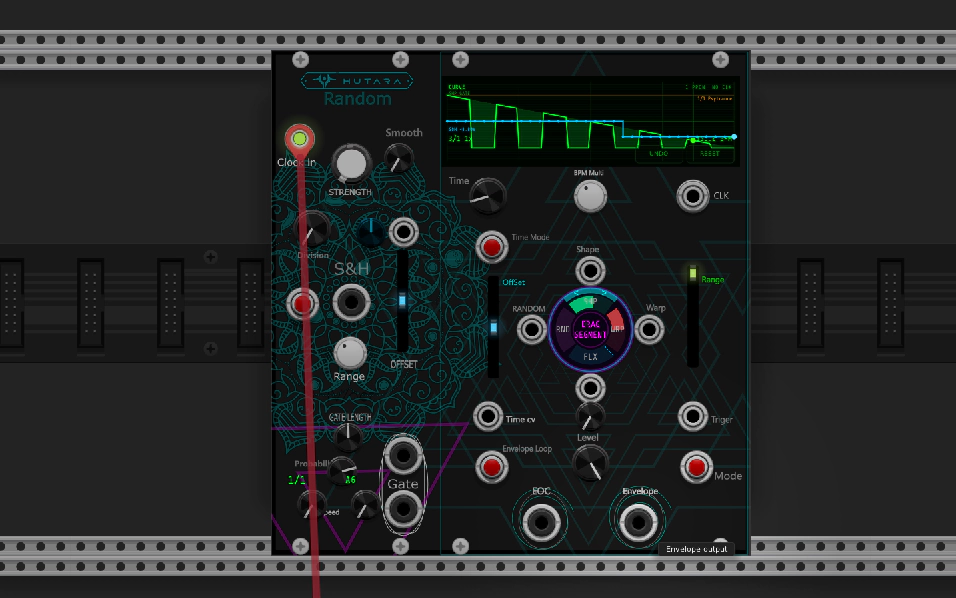
Legacy S&H Engine
Classic random CV with 0.25–10V output, bipolar/unipolar, trigger divider (1–3), exponential smoothing, and modulation input. Always active when clocked.
Enhanced Envelope
24 base shapes + 256-point draw table, WARP/FLUX/RANDOM ring, BPM sync with PPQN auto-detect, loop mode, and EOC output.
Gate Engine
16-step DNA patterns for 4 genres (Darkpsy, Psytrance, Hi-Tech, Break), phrase variations, swing, fill, and probability.
Live Display
Real-time oscilloscope showing envelope curve, draw mode, S&H history, and gate info. Includes UNDO/RESET buttons.
Param Ring
4 segments (SHAPE, WARP, FLUX, RANDOM) with drag-to-edit, scroll, double-click reset, and shape navigation arrows.
BPM Sync
Auto-detect PPQN from any clock source, plus 22 divisions and 6 multipliers (1/4× to 8×).
I/O Summary
| Type | Name | Purpose |
|---|---|---|
| Input | ON_INPUT | Master clock / trigger (drives S&H and Gate Engine) |
| Input | MODULATION_INPUT | External CV added to the S&H random value |
| Input | TIME_INPUT | Free-mode envelope time CV (10V = full range) |
| Input | SHAPE_INPUT | Envelope shape CV (10V = full range) |
| Input | WARP_INPUT | Envelope warp CV (5V = full range) |
| Input | FLUX_INPUT | Envelope flux CV (10V = full range) |
| Input | RANDOMNESS_INPUT | Randomness CV (10V = full range) |
| Input | TRIG_INPUT | Enhanced envelope trigger |
| Input | ENVELOPE_CLOCK_INPUT | BPM reference clock (independent of ON_INPUT) |
| Output | OUTPUT | Legacy S&H / Random CV |
| Output | GATE_OUTPUT | Gate from Gate Engine (10V) |
| Output | GATE_OUTPUT_INVERTED | Inverse gate, same width, end of step |
| Output | ENVELOPE_OUTPUT | Enhanced envelope output (only when Enhanced is On) |
| Output | EOC_OUTPUT | End-of-cycle pulse (1ms) |
Quick Start
Get sound out of Hutara Random CV in 60 seconds:
- Patch a clock to
ON_INPUT(top left). - Patch
GATE_OUTPUTto a VCA or envelope trigger. - Patch
OUTPUT(S&H) to a filter cutoff or pitch input. - Set
ENHANCED_MODEto Enhanced (right-side switch). - Pick a genre from
GATE_PATTERN(Darkpsy / Psytrance / Hi-Tech / Break). - Turn the SHAPE ring segment (or use the
</>arrows) to select a shape. - Adjust WARP and FLUX on the ring for motion.
- Optionally patch
ENVELOPE_CLOCK_INPUTand setTIME_SYNC_MODEto BPM for tempo-locked envelopes.
ON_INPUT. Without a clock,
GATE_OUTPUT and GATE_OUTPUT_INVERTED stay at 0V, and the
gate display shows (no clk).
Legacy S&H Engine
The Legacy engine runs whenever the module is patched, regardless of the
ENHANCED_MODE switch. It generates a new random voltage on each clock
edge (after passing through the trigger divider). The result is smoothed and
then sent to OUTPUT.
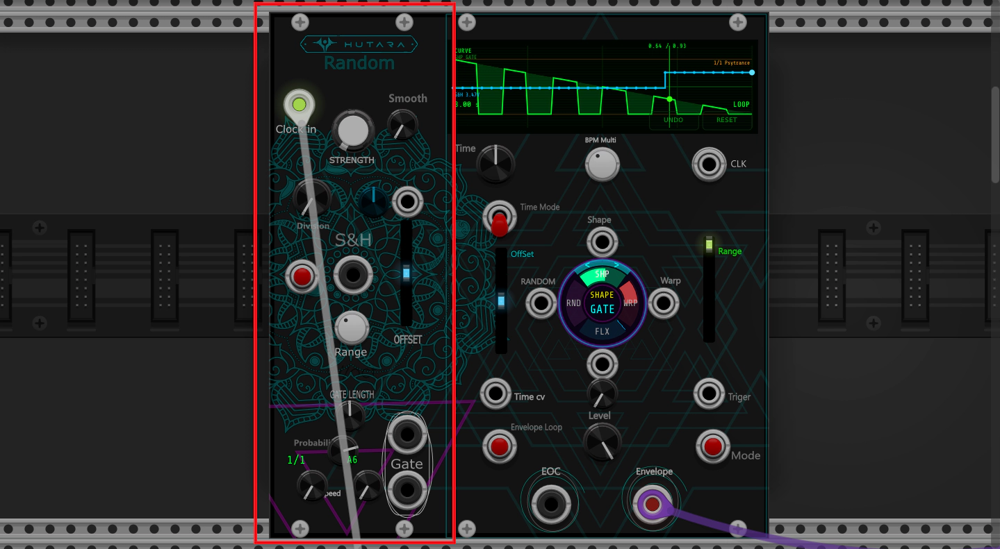
S&H Flow
| Parameter | Range | Description |
|---|---|---|
| OUTPUT_VOLTAGE | 0.25 .. 10 V | S&H output amplitude (clamp) |
| BIPOLAR | Unipolar / Bipolar | Output polarity (default: Bipolar) |
| STRENGTH | 1 .. 10 | Random value multiplier |
| TRIGGER_DIVISION | 1 .. 3 | Divide the incoming clock by 1, 2, or 3 |
| S_H_OFFSET | -5 .. +5 V | Offset added after clamping |
| MODULATION_AMOUNT | -1 .. +1 | Attenuverter for MODULATION_INPUT |
| SMOOTH_RANDOM | 0 .. 1 | Slew amount (0 = off) |
SMOOTH_RANDOM exceeds the deadzone (0.001), the output converges
exponentially toward the new target with a time constant derived from the current
clock period:
curve = smooth²transitionTime = max(clockPeriod · (0.02 + 0.98·curve), 0.001s)α = 1 − exp(−sampleTime / transitionTime)current += (target − current) · α
At
SMOOTH_RANDOM = 1, the full transition takes one clock period; at
low values it snaps almost instantly. The smoothing remains musical at any tempo.
max(0.5s, lastInterval · 6), the module clears
haveClockInterval, resets the PPQN detector, and zeroes the gate phase.
This prevents stale BPM values from persisting after the clock is unplugged.
Unipolar vs Bipolar
In Bipolar mode, the internal random value stays in
[−V, +V] after applying STRENGTH. In Unipolar
mode, the raw [−1, +1] value is remapped to [0, 1] before
scaling, producing [0, +V]. The S_H_OFFSET is added
after this clamp, so it can push the output beyond the configured
voltage (up to ±15V absolute).
Enhanced Envelope
The Enhanced envelope is a full ADSR-style generator with 24 base shapes,
a freehand drawing table, and continuous modulation via the ring segments.
It runs when ENHANCED_MODE is set to Enhanced.
Envelope Flow
The 24 Shapes
Each shape is a normalized function f(p) where p ∈ [0,1]
is the phase. The output is then scaled by LEVEL and the range/offset
parameters.
Shape Morphing
The SHAPE parameter selects between shapes with continuous linear
interpolation. The display shows the two adjacent shapes when in-between
(e.g. BELL->RISE). Morph is computed as:
pos = shape · (NUM_SHAPES − 1)i0 = floor(pos), i1 = min(i0+1, 23), f = pos − i0value = shapeValue(i0, p) + (shapeValue(i1, p) − shapeValue(i0, p)) · f
Warp
WARP (−1..+1) applies a phase warp before sampling the shape. This
stretches or compresses the shape along the time axis:
exponent = 2^(2.5 · warp)warpedPhase = p^exponent
At
warp = 0, the exponent is 1 (no change). Positive warp pushes
the curve earlier (fast attack), negative warp pushes it later (slow attack).
Range: exponent ∈ [2^(−2.5), 2^2.5] ≈ [0.177, 5.66].
Flux
FLUX (0..1) multiplies the shape by a high-frequency cosine ripple,
adding 8 cycles of modulation across the envelope:
ripple = 0.5 − 0.5·cos(2π · 8 · warpedPhase)value *= (1 − flux · ripple)
At
flux = 0, no ripple. At flux = 1, the shape is
modulated between 0× and 1× at 8× the envelope rate, creating a tremolo-like
texture.
Randomness
RANDOMNESS (0..1) multiplies the envelope by a deterministic
pseudo-noise pattern (3 sine partials), creating a "wobble" or "tremolo" effect:
noise = 0.50 + 0.25·sin(2π·1.73·p + 1.31) + 0.15·sin(2π·3.91·p + 2.73) + 0.10·sin(2π·7.17·p + 4.91)noise = clamp(noise, 0, 1)k = randomness · 0.9gain = 1 − k · noisevalue *= gain
At
randomness = 0, gain = 1 (no change). At randomness = 1,
gain ranges from 0.1 to 1, producing strong organic variation. The pattern is
deterministic so it loops perfectly with the envelope.
Envelope Range & Offset
| Parameter | Range | Description |
|---|---|---|
| LEVEL | 0 .. 100 % | Final envelope level multiplier |
| ENVELOPE_RANGE | 0.25 .. 10 V | Peak voltage of the envelope |
| ENVELOPE_OFFSET | -5 .. +5 V | DC offset added after scaling |
| BIPOLAR | Unipolar / Bipolar | Envelope output polarity (shared with S&H) |
In Unipolar mode, the envelope is value · range + offset.
In Bipolar mode, it becomes (2·value − 1) · range + offset.
The final output is clamped to ±15V.
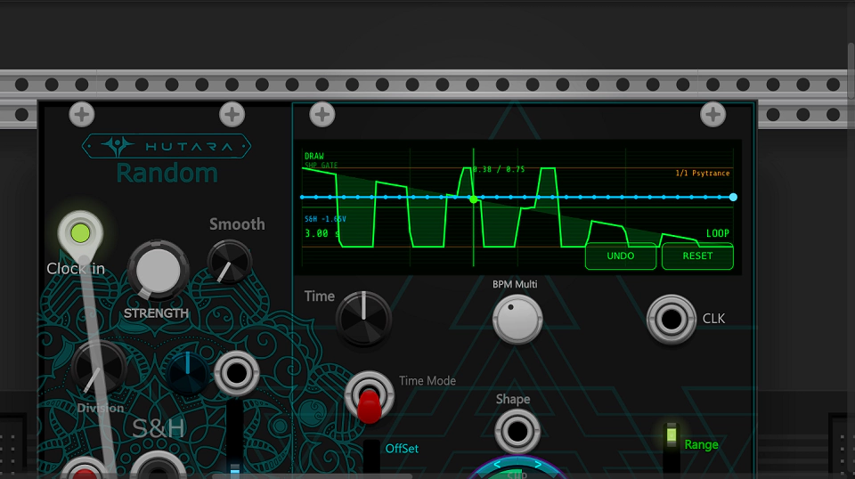
Draw Table
When the user presses on the display, the module enters Draw mode. A 256-point table is snapshotted from the current shape, then the user can draw directly on the display to modify it. In Draw mode the table overrides the shape parameter entirely.
- Press on the display → enter Draw mode (auto-snapshot of current shape at the current SHAPE value)
- Drag → paint the table with a 7-point-wide brush (radius 3, falloff)
- Snap Y → quantize to 1/32 steps for clean patterns (default ON)
- UNDO button (bottom-right of display) → revert up to 15 levels
- RESET button → restore the shape that was active when Draw mode started, and exit Draw mode
- Right-click menu → Undo Draw / Reset Draw (same actions)
DRAW (instead of CURVE) in the top-left
to remind you. Press RESET to return to shape mode.
Param Ring
The circular display at the center is a 4-segment parameter ring. Each segment controls one envelope parameter and supports drag, scroll, and double-click-to-reset:
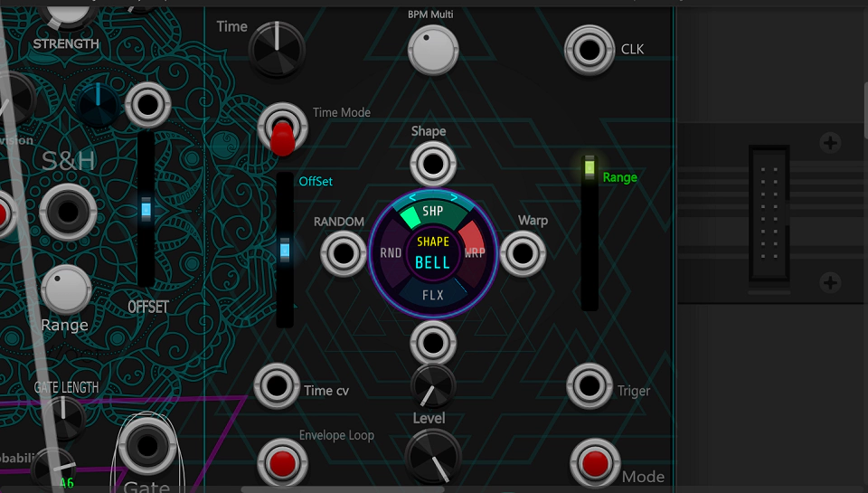
| Segment | Color | Parameter | Range | Interaction |
|---|---|---|---|---|
| SHP | Green | SHAPE | 0..1 | Drag up/down or right/left; scroll; double-click or right-click to reset |
| WRP | Red | WARP | -1..+1 | Same as SHP |
| FLX | Cyan | FLUX | 0..1 | Same as SHP |
| RND | Pink | RANDOMNESS | 0..1 | Same as SHP |
The < and > arrows on the right side of the ring
cycle the shape index for quick A/B comparison. Each click steps the SHAPE
parameter by ±1/23, wrapping around at the ends.
Gate Engine
The Gate Engine converts the incoming clock on ON_INPUT into a
16-step gate pattern with per-genre DNA. It drives GATE_OUTPUT and
GATE_OUTPUT_INVERTED. It runs independently of the Enhanced engine —
as long as a clock is present, gates are produced.
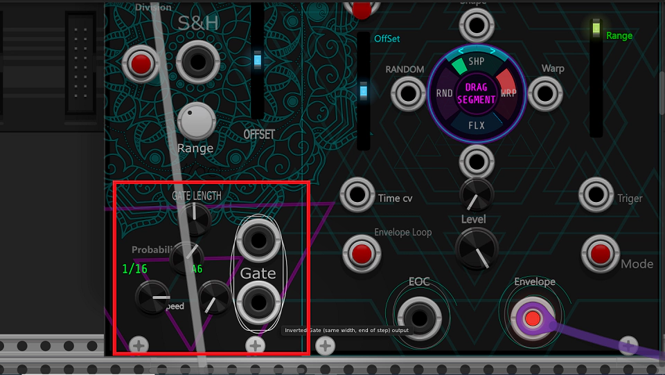
Gate Flow
4 Gate Patterns
Each pattern is a 16-step DNA table. Every step stores two values:
trigger (probability multiplier, 0–1) and width
(base gate width, 0–1). The step is evaluated once per step boundary, and the
resulting gate width is clamped by tempo-aware limits.
| Pattern | Style | Character |
|---|---|---|
| Darkpsy | 16-step DNA with rests | Sharp, sparse — classic darkpsy kick/hat. Uses high-contrast triggers with a few silent steps. |
| Psytrance | 4-on-floor with ghost notes | Rolling bassline gate. Accented downbeats with ghost-note steps between. |
| Hi-Tech | Fast 16-step with dense triggers | Hi-tech percussion. Almost every step fires, with short widths for speed. |
| Break | Breakbeat syncopation | Funk / breakbeat. Irregular triggers and rests for a syncopated feel. |
Gate Speed
RANDOM_GATE_SPEED selects how many steps fit in one quarter note.
The internal multiplier is applied to the detected quarter duration:
| Speed | Gate step duration | Beat multiplier | Equivalent |
|---|---|---|---|
| 1/1 | 4 beats | 4.0× | Whole note |
| 1/2 | 2 beats | 2.0× | Half note |
| 1/4 | 1 beat | 1.0× | Quarter note |
| 1/8 | 1/2 beat | 0.5× | Eighth note |
| 1/16 | 1/4 beat | 0.25× | Sixteenth note |
| 1/32 | 1/8 beat | 0.125× | Thirty-second note |
quarterDur = lastClockInterval · effectivePpqn, clamped to
[2e-5s, 8s]. Then stepDur = quarterDur · speedMult,
clamped to a minimum of 1e-5s. This keeps the gate engine stable
even at extreme tempos.
Phrase Variations
Every bar (16 steps), the module checks gateBar and may roll a
random variation based on GATE_FILL. Variations are only applied
at specific bar boundaries:
| Bar boundary | Possible variations | Probability |
|---|---|---|
| Every 4 bars | V_GHOST, V_ORIG | fill · 0.2 for ghost, else orig |
| Every 8 bars | V_GHOST, V_DROP, V_ORIG | fill · 0.4 for ghost, fill · 0.4 + 0.15 for drop, else orig |
| Every 16 bars | V_ROLL, V_GHOST, V_ORIG | fill · 0.6 for roll, fill · 0.6 + 0.2 for ghost, else orig |
| Every 32 bars | V_FILL32, V_ROLL, V_ORIG | fill · 0.9 for fill32, fill · 0.9 + 0.3 for roll, else orig |
| Other bars | V_ORIG | Always orig |
There are 5 variation types. Each modifies the DNA trigger and width on the fly:
| Variation | Effect on DNA |
|---|---|
| V_ORIG | No change — use the pattern DNA as-is. |
| V_GHOST | Adds ghost notes: if dna.trigger < 0.3, raises it to 0.40 and halves width; if dna.trigger < 0.7, multiplies trigger by 1.2 and width by 0.7. |
| V_FILL32 | Last 8 steps (step ≥ 8) fire at full probability with 0.35× width — a 32nd-note fill. |
| V_DROP | Odd-numbered steps have trigger multiplied by 0.15 — half-time feel. |
| V_ROLL | Last 4 steps (step ≥ 12) have trigger multiplied by 1.6 and width by 0.5 — a short roll. |
GATE_FILL to 0 for a completely static pattern (no variations),
or to 1 for maximum variation density. Psytrance typically uses 0.3–0.5; hitech
uses 0.6–0.9.
Probability
GATE_PROBABILITY (0..1) is applied on top of the DNA trigger.
The final probability p is computed as:
if triggerProb < 0.05: p = prob · 0.55else if triggerProb ≥ 0.95: p = (prob > 0.10) ? 1.0 : triggerProb · probelse: p = triggerProb · prob
A random value is then rolled; if it exceeds
p, the step is silent
(gate width = 0). This humanizes patterns: at 75–85% you get dropped triggers
that break up the loop naturally.
Gate Width
GATE_LENGTH (0.01..1.0) scales the DNA width. The final width
fraction is clamped by tempo-aware bounds to prevent clicks at fast tempos:
widthFrac = dna.width · widthMul · gateLen · 2effectiveMinWidthSec = 3ms (default), 1.5ms (<20ms step), 0.8ms (<10ms), 0.4ms (<5ms)minFracByTime = effectiveMinWidthSec / stepDurlowerBound = max(0.03, minFracByTime)gateWidthFrac = clamp(widthFrac, lowerBound, 0.45)
The absolute maximum is 45% of the step duration. At very fast tempos, the lower bound dominates and gates become slightly narrower than the DNA suggests — but they never click.
Swing
SWING (0..1) delays odd-numbered steps by up to 50% of a step,
creating a shuffle feel. The offset is applied to the effective phase used for
gate comparison:
swingOffset = (gateStep & 1) ? (swing · 0.5) : 0effectivePhase = gateStepPhase − swingOffset
Main gate is high when
effectivePhase ∈ [0, widthFrac). Inverted
gate is high when effectivePhase ∈ [1 − widthFrac, 1). Typical
psytrance values are 0.05–0.15 (i.e. 5–15% swing). At swing = 1
the odd steps are delayed by half a step — a full triplet shuffle.
Step Advance & Anti-Jump
The gate step advances when gateStepPhase ≥ 1. On each advance:
gateStep = (gateStep + 1) & 0x0F— wraps at 16- If
gateStep == 0,gateBar++andonPhraseBoundary()is called every 4 bars - The new step's DNA is evaluated immediately
The engine also guards against tempo jumps. If stepDur / gateLastStepDur
falls outside [0.125, 8], the phase is reset to 0 to avoid a
burst of steps. Likewise, when effectivePpqn changes, the phase
and last step duration are cleared.
GATE_PROBABILITY to 75–85% for a "human" feel. The gate will
randomly drop ~15–25% of triggers, breaking up the loop. Combine with
V_GHOST variations for maximum organic movement.
Gate Outputs
GATE_OUTPUT— main gate, 10V high, width =gateWidthFracGATE_OUTPUT_INVERTED— inverse gate, same width, but positioned at the end of the step (1 − widthFracto 1)
Both outputs are 0V when no clock is present (haveClockInterval == false)
or when the gate width is 0.
Clock & BPM Sync
The Enhanced envelope can sync to an incoming clock on
ENVELOPE_CLOCK_INPUT. When TIME_SYNC_MODE is set to
BPM Sync, envelope duration is derived from the measured BPM.
The Gate Engine, by contrast, always uses ON_INPUT as its clock.
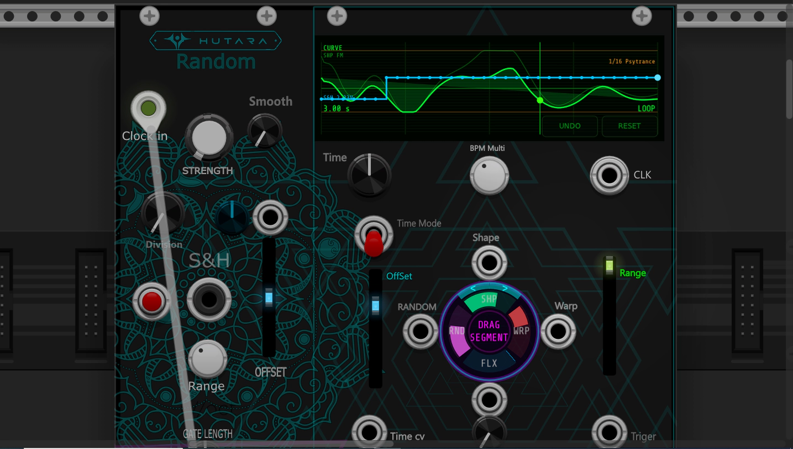
PPQN Auto-Detect
Two independent PPQN detectors run in the module:
- Gate PPQN detector — runs on
ON_INPUT, used by the Gate Engine - BPM PPQN detector — runs on
ENVELOPE_CLOCK_INPUT, used by BPM sync
Both detectors analyze the interval between clock edges. The gate detector scores candidate PPQNs against the BPM that would result, favoring tempos close to 120 BPM and penalizing out-of-range tempos:
quarterDur = avgInterval · candidatePpqnbpm = 60 / quarterDurscore = |bpm − 120|if bpm < 60: score += (60 − bpm) · 8if bpm > 220: score += (bpm − 220) · 8
Candidates:
{1, 2, 4, 6, 8, 12, 24, 48}. Requires at least
AUTO_DETECT_MIN_PULSES = 4 edges. Uses hysteresis
PPQN_HYSTERESIS = 1.5 — a new PPQN must score 1.5× better to win.
The average interval is computed over the last 8 edges.
secondsPerBeat = envelopeClockTimer · candidatePpqnbpm = 60 / secondsPerBeatAccept only
30 < bpm < 300.score = |bpm − 120|
Candidates:
{1, 2, 4, 24}. Runs on every clock edge, no hysteresis.
The result is stored in autoDetectedPpqn.
PPQN Override Parameters
| Parameter | Options | Purpose |
|---|---|---|
| Auto, 1, 2, 4, 6, 8, 12, 24, 48 | Gate PPQN override. In Auto, uses the gate detector. Otherwise forces the value. | |
CLOCK_PPQN |
Auto, 1, 2, 4, 24 (MIDI) | BPM PPQN override. In Auto, uses the BPM detector. Otherwise forces the value. |
ENVELOPE_CLOCK_INPUT (set
CLOCK_PPQN to 24) while feeding a 1-PPQN clock to
ON_INPUT (set INPUT_CLOCK_PPQN to 1). This gives you
precise BPM sync and predictable gate steps.
BPM Measurement
BPM is measured on rising edges of ENVELOPE_CLOCK_INPUT. Only edges
separated by at least 5ms are considered (debouncing). The measured BPM is
smoothed with a one-pole filter:
instantBpm = 60 / (edgeInterval · effectivePpqn)Accept only
5 < instantBpm < 400.ratio = instantBpm / measuredBpmIf
0.4 < ratio < 2.5:measuredBpm = measuredBpm · 0.9 + instantBpm · 0.1Else:
measuredBpm = instantBpm (hard reset on big jumps)
BPM_SMOOTHING = 0.1 — smooths over ~10 edges. The hard reset
avoids sticking to a stale value when the tempo changes drastically.
max(2s, beatPeriod · 4). If no
edge is seen within that window, haveBpmMeasurement is cleared and
the display shows MEAS instead of the BPM value. The measured BPM
is retained so the envelope keeps running at the last known tempo.
Time Sync Mode
| Mode | Time knob | Duration source |
|---|---|---|
| Free | Selects exponential time (0.005s .. 1.8s) | Time knob + TIME_INPUT |
| BPM Sync | Selects musical division (22 options) | Measured BPM × division × multiplier |
duration = 0.005 · 360000^time, where time ∈ [0, 1].
Range: 5ms to 1.8s. The TIME_INPUT adds voltage/10 to the knob
value before clamping.
beats = divisionToBeats(divisionIndex)mult = multiplierToFactor(multIdx)duration = beats · mult · 60 / measuredBpm
Divisions (22)
From 8/1 down to 1/64D, including triplets (T) and dotted (D) variants. The corresponding beat counts are stored in a lookup table:
| Straight | Triplet | Dotted |
|---|---|---|
| 8/1, 6/1, 4/1, 3/1, 2/1, 1/1, 1/2, 1/4, 1/8, 1/16, 1/32, 1/64 | 1/4T, 1/8T, 1/16T, 1/32T, 1/64T | 1/4D, 1/8D, 1/16D, 1/32D, 1/64D |
Beat counts (in quarter notes): 8/1 = 32, 6/1 = 24, 4/1 = 16, 3/1 = 12, 2/1 = 8, 1/1 = 4, 1/2 = 2, 1/4 = 1, 1/8 = 0.5, 1/16 = 0.25, 1/32 = 0.125, 1/64 = 0.0625. Triplets are 2/3 of the straight value; dotted are 1.5× the straight value.
Multipliers (6)
1/4×, 1/2×, 1×, 2×,
4×, 8× — multiplies the base division. Combined with
the 22 divisions, this gives 132 effective timing options.
Envelope Trigger
The envelope can be triggered in three ways:
- TRIG_INPUT — external trigger via a Schmitt trigger (threshold 0.1V rising, 1V hysteresis)
- TRIG_BUTTON_PARAM — manual button on the panel
- Loop mode — automatic retrigger when phase reaches 1
When triggered, envelopePhase is reset to 0 and running
is set to true. When the phase reaches 1:
EOC_OUTPUTpulses for 1ms- If loop is on, the phase wraps (
phase -= floor(phase)) and keeps running - If loop is off, the phase is clamped to 1 and
runningis set to false
LOOP to On and don't patch anything to TRIG_INPUT.
The envelope becomes a tempo-synced LFO. Use BPM Sync + a slow division (1/1 or
2/1) for slow evolving modulation.
Live Display (Oscilloscope)
The large rectangular display at the top-right of the panel is a real-time oscilloscope showing the active envelope, the S&H history, and gate info. It has three visual layers plus three overlay indicators.
Layers (Inside to Outside)
| Layer | Color | What it shows |
|---|---|---|
| Background | Near-black | Grid: 4 vertical divisions, 32 horizontal sub-divisions when Snap Y is on |
| Zero line | Dim green | Voltage = 0V reference line |
| Range lines | Dim orange | Upper/lower voltage bounds of the current envelope range + offset |
| Ghost curve | Faint green | Envelope without randomness — shows the base shape while Randomness > 0 |
| Main curve | Bright green | The actual envelope (with randomness applied) |
| Fill | Translucent green | Area between the curve and the zero line |
| S&H curve | Cyan | Last 32 S&H samples, drawn as step or smooth curve depending on smoothing |
| S&H dot | Light cyan | Most recent S&H sample |
| Playhead | Green vertical line + dot | Current envelope phase |
Voltage Scaling
The display uses a fixed vertical scale from −15V to +15V,
independent of the current range/offset. This means changing
ENVELOPE_RANGE or ENVELOPE_OFFSET visibly moves and
scales the curve on screen. The zero line is always drawn at the correct position.
S&H History
The Legacy S&H output is sampled into a 256-entry history buffer at a rate
of SH_DISPLAY_COUNT = 32 samples per clock period. The display
shows the last 32 samples, right-aligned so the newest sample is at the right
edge. If fewer than 32 samples have been captured, the oldest value is
duplicated to fill the left side.
- Bipolar display — maps
[−10V, +10V]to the full vertical range - Unipolar display — maps
[0V, +10V]to the full vertical range - Smoothing on — the curve is drawn as connected line segments
- Smoothing off — the curve is drawn as steps (horizontal + vertical segments), with dots at each sample
Overlay Text
Several text overlays are drawn on top of the display:
| Position | Text | Meaning |
|---|---|---|
| Top-left | CURVE / DRAW | Current mode (Draw overrides Shape) |
| Top-left, line 2 | SHP <name> | Current shape name (e.g. SHP BELL) |
| Top-right (BPM sync) | <N> PPQN / <N> PPQN NO CLK / <N> PPQN MEAS | Detected PPQN + clock/BPM status |
| Top-right, line 2 | <speed> <pattern> <variation> | e.g. 1/16 Psytrance ghost (or (no clk)) |
| Bottom-left | Time or division × multiplier | Free mode: 250 ms. BPM mode: 1/8 1x |
| Bottom-right | <bpm> BPM / LOOP | BPM value in sync mode, or LOOP indicator |
| Bottom-left, line 2 | S&H <voltage>V | Current S&H output voltage |
| Cursor (hover) | <t> / <v> | Normalized table coordinates under the mouse (when not drawing) |
Draw Mode Interactions
- Left-click on the display area (not on UNDO/RESET) → start a draw gesture
- Drag → paint along the path with a 7-point-wide brush
- Brush falloff → center point gets full value, neighbors get 1 − |d|/(r+1) weight
- Snap Y (default on) → quantizes to 1/32 steps
- On release → gesture ends; the table remains
UNDO / RESET Buttons
Two buttons are drawn at the bottom-right of the display:
- UNDO — reverts to the previous table state. Up to 15 levels of undo. Disabled (grayed) when no undo is available.
- RESET — restores the shape that was active when Draw mode started, and exits Draw mode. Disabled (grayed) when no reset snapshot is available.
Both buttons highlight on hover. They can also be triggered from the right-click context menu (Undo Draw / Reset Draw).
t / v readout follows the cursor. t is the normalized
phase (0–1) and v is the normalized value (0–1). This is useful
for placing points precisely when planning a draw gesture.
Full Parameter Reference
Legacy S&H
| Parameter | Range | Default | Description |
|---|---|---|---|
| OUTPUT_VOLTAGE | 0.25 .. 10 V | 5 V | S&H output amplitude clamp |
| BIPOLAR | Unipolar / Bipolar | Bipolar | Output polarity (shared with envelope) |
| STRENGTH | 1 .. 10 | 1 | Random value multiplier |
| TRIGGER_DIVISION | 1 .. 3 | 1 | Divide incoming clock by 1, 2, or 3 |
| S_H_OFFSET | -5 .. +5 V | 0 V | Offset added after clamping |
| MODULATION_AMOUNT | -1 .. +1 | 0 | Attenuverter for MODULATION_INPUT |
| SMOOTH_RANDOM | 0 .. 1 | 0 | Slew amount (0 = off) |
Enhanced Envelope
| Parameter | Range | Default | Description |
|---|---|---|---|
| ENHANCED_MODE | Legacy / Enhanced | Enhanced | Enables the Enhanced envelope engine |
| TIME | 0 .. 1 | 0.5 | Free: exponential time (5ms..1.8s). BPM: division index (22 options) |
| SHAPE | 0 .. 1 | 0 | Selects among 24 shapes with continuous morph |
| WARP | -1 .. +1 | 0 | Phase warp (exponent = 2^(2.5·warp)) |
| FLUX | 0 .. 100 % | 0 | 8-cycle ripple depth |
| LOOP | Off / On | On | Envelope loop mode |
| RANDOMNESS | 0 .. 100 % | 0 | Deterministic 3-partial noise multiplier |
| LEVEL | 0 .. 100 % | 100 % | Final envelope level multiplier |
| TRIG_BUTTON | Button | — | Manual envelope trigger |
| TIME_SYNC_MODE | Free / BPM Sync | Free | Time source for the envelope duration |
| BPM_MULTIPLIER | 1/4× .. 8× | 1× | Multiplier applied to the base division |
| CLOCK_PPQN | Auto / 1 / 2 / 4 / 24 | Auto | BPM PPQN override |
| ENVELOPE_OFFSET | -5 .. +5 V | 0 V | DC offset added after scaling |
| ENVELOPE_RANGE | 0.25 .. 10 V | 10 V | Peak voltage of the envelope |
Gate Engine
| Parameter | Range | Default | Description |
|---|---|---|---|
| RANDOM_GATE_SPEED | 1/1 .. 1/32 (6 options) | 1/1 | Step duration relative to a quarter note |
| GATE_LENGTH | 0.01 .. 1.0 | 0.5 | Gate width scale |
| GATE_PATTERN | Darkpsy / Psytrance / Hi-Tech / Break | Psytrance | 16-step DNA pattern |
| GATE_FILL | 0 .. 1 | 0.4 | Phrase variation density |
| GATE_PROBABILITY | 0 .. 100 % | 75 % | Per-step trigger probability multiplier |
| INPUT_CLOCK_PPQN | Auto / 1 / 2 / 4 / 6 / 8 / 12 / 24 / 48 | Auto | Gate PPQN override |
| SWING | 0 .. 100 % | 0 % | Delay applied to odd-numbered steps (max 50% of a step) |
Inputs & Outputs
| Port | Type | Range / Behavior |
|---|---|---|
| ON_INPUT | Input | Schmitt trigger, low 0.3V, high 1.0V. Drives S&H + Gate Engine. |
| MODULATION_INPUT | Input | ±10V, scaled by MODULATION_AMOUNT and added to S&H value |
| TIME_INPUT | Input | ±10V, adds voltage/10 to TIME when in Free mode |
| SHAPE_INPUT | Input | ±10V, adds voltage/10 to SHAPE |
| WARP_INPUT | Input | ±5V, adds voltage/5 to WARP |
| FLUX_INPUT | Input | ±10V, adds voltage/10 to FLUX |
| RANDOMNESS_INPUT | Input | ±10V, adds voltage/10 to RANDOMNESS |
| TRIG_INPUT | Input | Schmitt trigger, 0.1V rising threshold, 1V hysteresis |
| ENVELOPE_CLOCK_INPUT | Input | Schmitt trigger, low 0.3V, high 1.0V. Used for BPM measurement. |
| OUTPUT | Output | ±10V (bipolar) or 0..10V (unipolar), clamped by OUTPUT_VOLTAGE, plus S_H_OFFSET |
| GATE_OUTPUT | Output | 10V high / 0V low, width = gateWidthFrac |
| GATE_OUTPUT_INVERTED | Output | 10V high at end of step, same width as main gate |
| ENVELOPE_OUTPUT | Output | ±15V clamped, scaled by ENVELOPE_RANGE and shifted by ENVELOPE_OFFSET |
| EOC_OUTPUT | Output | 10V pulse for 1ms at end of each envelope cycle |
Display & UI
| Element | Interaction | Effect |
|---|---|---|
| Display area (hover) | Move mouse | Shows t / v cursor readout |
| Display area (press+drag) | Left drag | Enters Draw mode and paints the table |
| UNDO button | Left click | Reverts to the previous table snapshot (up to 15 levels) |
| RESET button | Left click | Restores the pre-draw shape and exits Draw mode |
| Param ring segment | Drag up/down or left/right | Adjusts the segment parameter (100 px = full range) |
| Param ring segment | Scroll | 1% step, or 5% with Shift, 0.1% with Ctrl |
| Param ring segment | Double-click or right-click | Resets segment to default |
| Ring < / > arrows | Left click | Steps SHAPE ±1/23, wrapping at ends |
| Context menu | Right-click on panel | Reset Envelope Phase / Reset Gate Phrase / Reset PPQN Detection / Undo Draw / Reset Draw / Sync Mode / Reset BPM |
CV Response
Hutara Random CV applies all incoming CV after the panel knob value, then clamps the sum. This means the knob acts as an offset, not an attenuator. The table below lists the exact scaling for each CV input.
| Input | Scaling | Target parameter | Clamp |
|---|---|---|---|
| TIME_INPUT | voltage / 10 | TIME (only in Free mode) | 0 .. 1 |
| SHAPE_INPUT | voltage / 10 | SHAPE | 0 .. 1 |
| WARP_INPUT | voltage / 5 | WARP | -1 .. +1 |
| FLUX_INPUT | voltage / 10 | FLUX | 0 .. 1 |
| RANDOMNESS_INPUT | voltage / 10 | RANDOMNESS | 0 .. 1 |
| MODULATION_INPUT | voltage · MODULATION_AMOUNT | S&H random value | — |
effective = clamp(knob + cv·scale, min, max)
Example: with SHAPE knob at 0.5 and SHAPE_INPUT at +5V, the effective shape is
0.5 + 5/10 = 1.0 (clamped). With WARP knob at 0 and WARP_INPUT at
+5V, the effective warp is 0 + 5/5 = 1.0 (clamped to +1).
MODULATION_AMOUNT, range -1..+1). It is applied to the raw CV
before the value is added to the S&H target. This allows inverting
the modulation, or zeroing it out without unplugging the cable.
Tips & Recipes
Classic Random Lead Modulation
- Patch
OUTPUTto a filter cutoff - Set
SMOOTH_RANDOMto 30% for glide between values - Set
TRIGGER_DIVISIONto 2 (half the clock rate) - Set
OUTPUT_VOLTAGEto 4V,BIPOLARon - Patch a slow LFO to
MODULATION_INPUTwith amount 0.3
Tempo-Locked Envelope for Basslines
- Patch your master clock to
ENVELOPE_CLOCK_INPUT - Set
TIME_SYNC_MODEto BPM Sync - Set
TIMEto 1/8 or 1/16 (division index via the TIME knob) - Set
LOOPto On - Set
SHAPEto PLUCK or EXP for a tight decay - Patch
ENVELOPE_OUTPUTto a VCA or filter
Gate Pattern for Darkpsy Kick
- Patch a 1-PPQN clock to
ON_INPUT - Set
GATE_PATTERNto Darkpsy - Set
RANDOM_GATE_SPEEDto 1/16 - Set
GATE_PROBABILITYto 90% - Set
SWINGto 5% - Patch
GATE_OUTPUTto your kick envelope trigger
Evolving Pad with Draw Mode
- Set
ENHANCED_MODEto Enhanced,LOOPto On - Set
TIMEto 2/1 or 4/1 (slow) - Press on the display and draw a smooth swell curve
- Set
RANDOMNESSto 40% for organic motion - Set
FLUXto 20% for tremolo - Patch
ENVELOPE_OUTPUTto a VCA with a long release
Custom Drum Envelope
- Press on the display to enter Draw mode
- Draw a sharp peak near t=0.02, then a smooth exponential tail
- Disable Snap Y for a smooth curve
- Patch
TRIG_INPUTto your sequencer gate - Set
TIME_SYNC_MODEto Free,TIMEto ~100ms - Patch
ENVELOPE_OUTPUTto your drum VCA
Humanized Hi-Hat Pattern
- Set
GATE_PATTERNto Break or Hi-Tech - Set
GATE_PROBABILITYto 70% - Set
GATE_FILLto 0.6 for phrase variations - Set
SWINGto 10% - Patch
GATE_OUTPUTto a hat VCA with a short decay envelope
OUTPUT (S&H) and ENVELOPE_OUTPUT to
the same filter (via a mixer). The S&H provides stepped randomness while
the envelope adds a shaped contour. This creates evolving, non-repetitive
modulation that stays musical.
EOC_OUTPUT to the trigger of another Random CV module.
Every envelope cycle fires the second module once, creating a 2-stage
random sequence where the second value is chosen at the end of the first
envelope.
Troubleshooting
No output from OUTPUT
- Check that
ON_INPUTis receiving a clock (gate high ≥ 1.0V, low ≤ 0.3V). - Without a clock, the S&H target never updates and the output stays at its last value or 0V.
- Verify that
OUTPUT_VOLTAGEis not at its minimum (0.25V). - If
SMOOTH_RANDOMis high, the output may take a full clock period to move.
No envelope output
- Check that
ENHANCED_MODEis set to Enhanced. - Trigger the envelope via
TRIG_INPUTor the panel button, or enableLOOP. - If
LOOPis Off and no trigger is present, the envelope stays at phase 1 and outputs its final value (which may be 0). - Verify
LEVELandENVELOPE_RANGEare not at zero.
No gate output
- Check that
ON_INPUTis connected and clocked. The gate engine requires a validhaveClockInterval. - Check
GATE_PROBABILITY— if it is 0, no gates fire. - Verify that
GATE_LENGTHis not at its minimum (0.01). - The display shows
(no clk)when no clock is detected.
BPM sync doesn't lock
- Check that
ENVELOPE_CLOCK_INPUTis patched and clocked. - The display shows
NO CLKwhen no clock is present, andMEASwhile measuring. - Check
CLOCK_PPQN— if the auto-detect picks the wrong PPQN, set it manually (e.g. 24 for MIDI clock). - The BPM timeout is 2 seconds; if the clock is slower than 30 BPM, the measurement may expire between edges.
Draw mode doesn't respond
- Make sure you are pressing inside the display area, not on the UNDO/RESET buttons.
- The display shows
DRAW(instead ofCURVE) when Draw mode is active. - If Snap Y is on, drawn points snap to 1/32 steps — disable it for smooth curves.
- If the table is already drawn, press RESET to return to shape mode before drawing again.
Param ring doesn't respond
- Hover over the ring to focus a segment. Only the focused segment responds to clicks.
- Drag inside the segment band (not the center or the outer arrows).
- Double-click or right-click to reset a segment to its default.
- If the ring is not visible, check that the module is not in a collapsed state.
Gate pattern sounds static
- Increase
GATE_FILLto enable phrase variations. - Lower
GATE_PROBABILITYto 70–85% for humanization. - Add
SWING(5–15%) for a shuffled feel. - Try different
GATE_PATTERNvalues — Darkpsy and Break have more rests than Hi-Tech.
S&H output jumps too abruptly
- Increase
SMOOTH_RANDOMto 20–40%. - Note that smoothing time scales with the clock period — at slow clocks the glide is longer.
- If you want stepped output, keep
SMOOTH_RANDOMat 0.
Envelope doesn't loop
- Check that
LOOPis set to On. - If
LOOPis Off, the envelope stops at phase 1 and waits for a trigger. - Use
TRIG_INPUTor the panel button to retrigger manually.
Display shows wrong PPQN
- The auto-detect favors BPMs near 120. If your clock is far from that, set
CLOCK_PPQNorINPUT_CLOCK_PPQNmanually. - Use the context menu "Reset PPQN Detection" to clear the history and re-detect.
- Hysteresis (1.5×) means the detector is slow to change — this is intentional to avoid flapping.
State Serialization
The module persists the following state in the patch JSON:
| JSON key | Type | Description |
|---|---|---|
enhancedMode | bool | Whether Enhanced mode was active |
drawMode | bool | Whether Draw mode was active |
shapeVersion | int | NUM_SHAPES at save time (24). Used for forward-compatibility. |
drawTable | float[256] | The current draw table (only saved when drawMode is true) |
drawResetTable | float[256] | The pre-draw snapshot used by RESET (only saved when drawMode is true) |
drawResetAvailable | bool | Whether RESET is available (only saved when drawMode is true) |
measuredBpm | float | Last measured BPM (used to seed the display on load) |
autoDetectedPpqn | int | Last BPM PPQN detection result |
onInputDetectedPpqn | int | Last gate PPQN detection result |
onReset), all runtime state is cleared: RNG seed,
S&H output, envelope phase, gate state, PPQN history, BPM, and the draw
table. The draw table is re-initialized to a triangle shape. This means a
module reset effectively discards any drawn envelope — save your patch first
if you want to keep it.
Quick Reference Card
A one-page summary of the most important values and formulas. Use this as a cheat sheet while patching.
Timing
| Quantity | Value |
|---|---|
| Free-mode time range | 5 ms .. 1.8 s |
| BPM measurement valid range | 5 .. 400 BPM |
| BPM smoothing factor | 0.1 (≈10 edges) |
| BPM timeout | max(2 s, 4 × beat period) |
| Gate step minimum | 1e-5 s |
| Gate width absolute range | 3 % .. 45 % of step |
| Gate width minimum (by step duration) | 3 ms (<20 ms step: 1.5 ms, <10 ms: 0.8 ms, <5 ms: 0.4 ms) |
| Clock-loss timeout | max(0.5 s, 6 × last interval) |
| EOC pulse width | 1 ms |
| Envelope debounce on TRIG_INPUT | 0.1 V rising, 1 V hysteresis |
Detection
| Quantity | Value |
|---|---|
| Gate PPQN candidates | 1, 2, 4, 6, 8, 12, 24, 48 |
| BPM PPQN candidates | 1, 2, 4, 24 |
| Auto-detect minimum pulses | 4 |
| PPQN hysteresis | 1.5× (new must score 1.5× better) |
| Gate PPQN history | last 8 intervals |
| Gate PPQN scoring target | 120 BPM (±penalty outside 60..220) |
| BPM PPQN scoring target | 120 BPM, valid 30..300 |
Shape Engine
| Quantity | Value |
|---|---|
| Number of shapes | 24 |
| Draw table size | 256 points |
| Draw undo levels | 15 |
| Draw brush radius | 3 (7-point-wide, falloff) |
| Snap Y step | 1/32 |
| Warp exponent range | 2^(−2.5) .. 2^(2.5) ≈ 0.177 .. 5.66 |
| Flux ripple cycles | 8 × warped phase |
| Randomness noise partials | 3 (1.73, 3.91, 7.17 Hz) |
Gate Engine
| Quantity | Value |
|---|---|
| Steps per pattern | 16 |
| Patterns | Darkpsy, Psytrance, Hi-Tech, Break |
| Variations | V_ORIG, V_GHOST, V_FILL32, V_DROP, V_ROLL |
| Variation check interval | every 4 bars (on bar % 4 == 0) |
| Swing max offset | 50 % of a step (odd steps only) |
| Gate speed multipliers | 4.0×, 2.0×, 1.0×, 0.5×, 0.25×, 0.125× |
| Gate high voltage | 10 V |
Voltage Ranges
| Output | Bipolar | Unipolar |
|---|---|---|
| OUTPUT (S&H) | −V .. +V (clamped by OUTPUT_VOLTAGE) | 0 .. +V |
| ENVELOPE_OUTPUT | −range .. +range, + offset | 0 .. +range, + offset |
| GATE_OUTPUT | 0 / 10 V | — |
| GATE_OUTPUT_INVERTED | 0 / 10 V | — |
| EOC_OUTPUT | 0 / 10 V (1 ms pulse) | — |
CV Scaling
| Input | Divisor | Full-range voltage |
|---|---|---|
| TIME_INPUT | 10 | ±10 V |
| SHAPE_INPUT | 10 | ±10 V |
| WARP_INPUT | 5 | ±5 V |
| FLUX_INPUT | 10 | ±10 V |
| RANDOMNESS_INPUT | 10 | ±10 V |
| MODULATION_INPUT | × MODULATION_AMOUNT | ±10 V × amount |
Divisions (beats per cycle)
| Straight | Triplet | Dotted |
|---|---|---|
| 8/1=32, 6/1=24, 4/1=16, 3/1=12, 2/1=8, 1/1=4, 1/2=2 | — | — |
| 1/4=1, 1/8=0.5, 1/16=0.25, 1/32=0.125, 1/64=0.0625 | 1/4T=0.667, 1/8T=0.333, 1/16T=0.167, 1/32T=0.083, 1/64T=0.042 | 1/4D=1.5, 1/8D=0.75, 1/16D=0.375, 1/32D=0.188, 1/64D=0.094 |